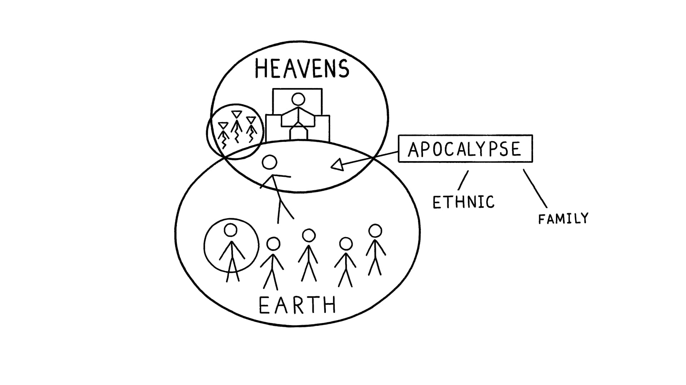

Sessão 4: Refletindo sobre a Introdução a EfésiosSession 4: Reflecting on the Introduction to Ephesians
Principais LiçõesKey Takeaways
- O propósito e plano supremo de Deus é unificar Céu e Terra no Messias. Essa ideia é a estrutura de todo o livro de Efésios.God's ultimate purpose and plan is to unify Heaven and Earth in the Messiah. This idea is the framework for the whole book of Ephesians.
A Quem Paulo se Dirige?Who Is Paul Addressing?
Em Efésios 1:1, Paulo dirige a carta aos "santos" (grego: hagiois). Esse termo importante é geralmente traduzido como "santos", o que faz os leitores de inglês perderem o significado teológico completo.In Ephesians 1:1, Paul addresses his letter to "the holy ones" (Greek: hagiois). This important term is usually translated "saints," which results in English readers missing the full theological significance.
Santidade (hebraico: qadosh / grego: hagios) é antes de tudo um atributo de Deus, definido como sua unicidade à parte, por virtude de seu status de Criador e fonte de toda realidade (Isaías 6:3).Holiness (Hebrew: qadosh / Greek: hagios) is first and foremost an attribute of God, defined as his unique, one-of-a-kind otherness by virtue of his status as the Creator and source of all reality (Isaiah 6:3).
"“Santo, santo, santo é Yahweh, o Deus poderoso; toda a terra está repleta da sua glória.”""… “Holy, holy, holy is Yahweh God the mighty, the whole land is the fullness of his glory.”" Isaías 6:3 — Tradução do InstrutorIsaiah 6:3 Instructor’s Translation
Nos dois reinos de Céu e Terra, Deus tem duas famílias paralelas de representantes à sua imagem: os seres espirituais ("o exército dos céus" em Gênesis 2:1) e os governantes humanos na terra (Gênesis 1:26-28). Ambas as famílias são convidadas à presença de Deus para compartilhar de seu status santo.In the twin realms of Heaven and Earth, God has two parallel families of image-bearing representatives: the spiritual beings ("the host of heaven" in Gen. 2:1) and the human rulers on the land (Gen. 1:26-28). Both families are invited into God's presence to share in his holy status.
Israel como os SantosIsrael as the Holy Ones
Israel é chamado a ser uma nação santa (Êxodo 19:6). Quando fiel à aliança e com acesso à presença de Deus no templo, torna-se "santos". "Eu sou Yahweh seu Deus, e vós vos santificareis, e sereis santos (ἁγιοι), pois eu sou santo (ἁγιος)" (Levítico 11:44, 19:2, 20:7,26; Números 15:40).Israel is called to be a holy nation (Exod. 19:6). When faithful to the covenant and with access to God's presence in the temple, they become "holy ones." "I am Yahweh your God, and you will make yourselves holy, and you shall be holy ones (ἁγιοι) for I am a holy one (ἁγιος)" (Lev. 11:44, 19:2, 20:7, 26; Num. 15:40).
Seres Espirituais como SantosSpiritual Beings as Holy Ones
Seres espirituais também são chamados de "santos" (ἁγιοι) na Bíblia Hebraica (Zacarias 14:5; Salmo 89:5-8; Daniel 8:24). Salmo 89:5 (LXX): "Os céus louvarão as tuas maravilhas, Yahweh, até a tua fidelidade, na assembleia dos santos (ἐκκλησίᾳ ἁγίων)."Spiritual beings are also referred to as "holy ones" (ἁγιοι) in the Hebrew Bible (Zech. 14:5; Ps. 89:5-8; Dan. 8:24). Psalm 89:5 (LXX): "The heavens will praise your wonders, Yahweh, even your faithfulness, in the assembly of the holy ones (ἐκκλησίᾳ ἁγίων)."
"Deus é grandemente temido no conselho dos seus santos (ἁγιων) …""God is greatly feared in the council of his holy ones (ἁγιων) …" Salmo 89:7 — Septuaginta/LXXPsalm 89:7 Septuagint/LXX
Paulo atribui a terminologia do conselho divino celestial de Deus àqueles que confiam no Messias. Jesus, o Messias humano, foi exaltado sobre o conselho divino para governar o Céu e a Terra (Ef 1:19-21), e esse mesmo status foi concedido aos seus seguidores (Ef 2:5-6).Paul assigns the terminology of God’s divine heavenly council to those who trust in the Messiah. Jesus the human Messiah has been exalted over the divine council to rule Heaven and Earth (Eph. 1:19-21), and that same status has been granted to his followers (Eph. 2:5-6).
Pergunta de ReflexãoReflection Question
O apocalipse em Efésios trata da reconciliação de todas as coisas, bem como da entronização dos humanos com o Messias. Como o entendimento desses apocalipses como realidades presentes pode mudar a forma como você vê a sua vida no aqui e agora?The apocalypse in Ephesians is about the reconciliation of all things, as well as the enthronement of humans with the Messiah. How can understanding these apocalypses as present realities change how you view your life in the here and now?
Módulo 2: O Design de EfésiosModule 2: The Design of Ephesians

Sessões 5-7SESSIONS 5-7
Aventure-se no exquisito design literário e simetria de Efésios 1-3.Venture into the exquisite literary design and symmetry of Ephesians 1-3.